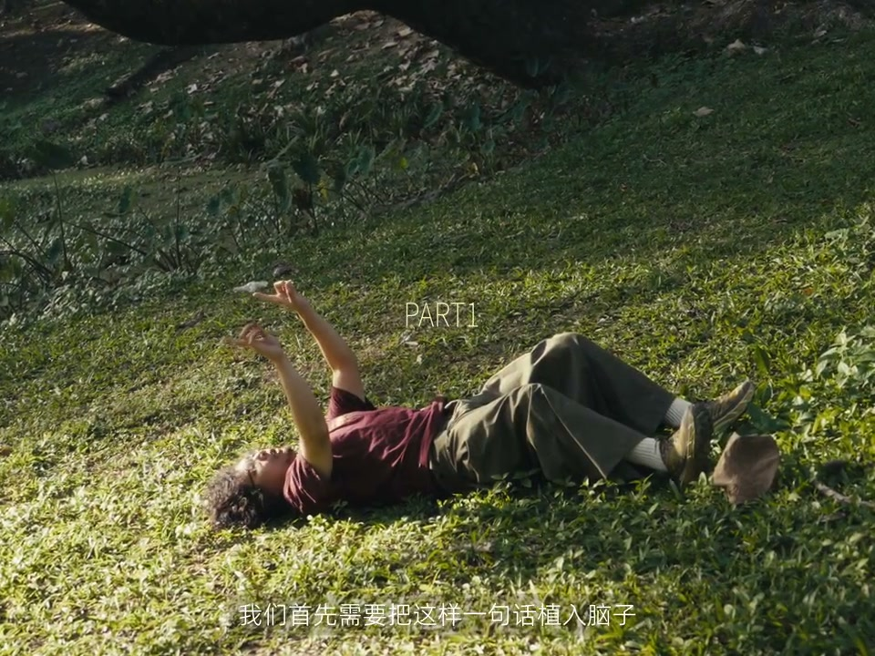
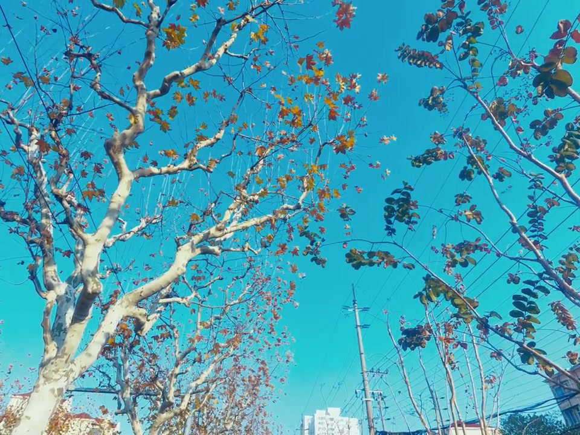
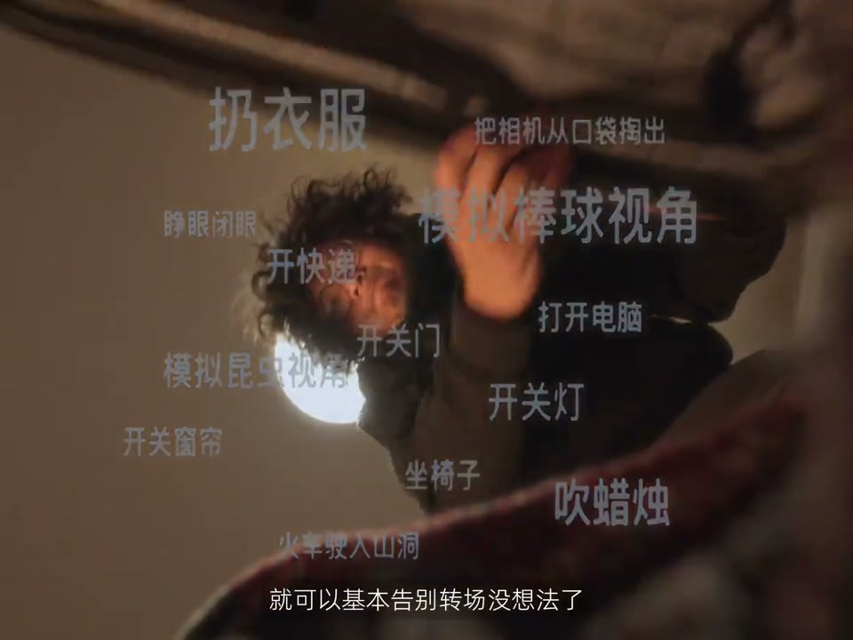
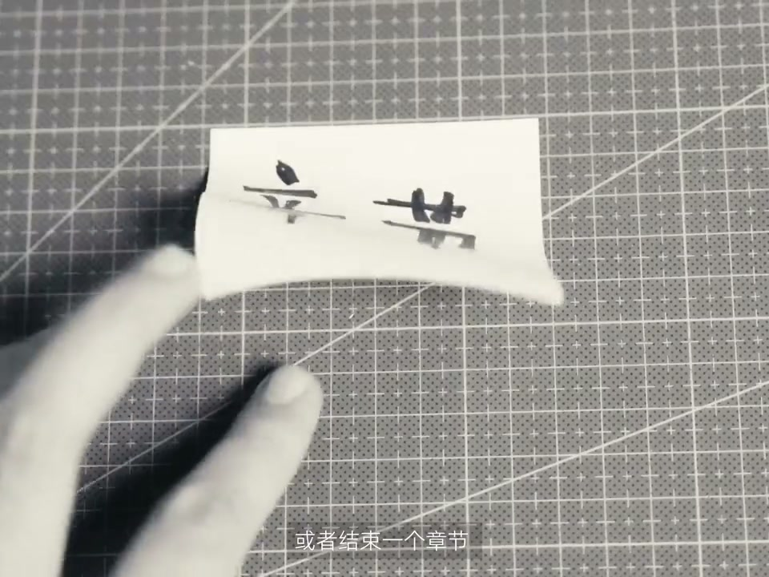

01
中文
你们应该也这样拍过吧：在场景A把画面一遮，来到场景B再把手拿开。
EN
You've shot like this: cover the lens in scene A, uncover it in scene B.
表达提示cover the lens（遮镜头）

Scene English · 剪辑 · 黑场转场
A Transition Everyone Knows—So Creative!
🎧 语音讲解
The Blackout Transition Basics
情境场景A遮镜头、场景B松开手，经典的2017年转场，核心是那短暂漆黑。
你们应该也这样拍过吧：在场景A把画面一遮，来到场景B再把手拿开。
You've shot like this: cover the lens in scene A, uncover it in scene B.
表达提示cover the lens（遮镜头）
在2017年，这样的转场让我像第一次看到魔术一样找不到缝在哪里。
In 2017 this transition felt like magic I couldn't find the seam of.
表达提示find the seam（找到接缝）
这个转场的丝滑核心，是两个场景之间迷人而短暂的漆黑。
Its smooth core is the brief, charming blackout between scenes.
表达提示brief blackout（短暂漆黑）
cover the lens（遮镜头
find the seam（找到接缝

Covering Scenes in Daily Life
情境不只是手遮：扔衣服、关门、开电脑……生活中有很多自然的遮镜场景。
我们需要把这样一句话植入脑子：不只是用手遮。
Plant this in your head: it's not just your hand.
表达提示not just your hand（不只是手）
扔衣服、拍块地、开门关门、打仓眼、打开电脑、坐椅子。
Throwing clothes, slamming doors, flipping switches, opening laptops, sitting down.
表达提示cover actions（遮挡动作）
生活中有这么多可以自然地遮住镜头的场景。
Life is full of natural lens-covering moments.
表达提示natural covers（自然遮挡）
这些画面随意组合都可以形成黑场转场，比光是用手遮的要丰富很多。
Mix them freely to create blackout transitions—far richer than just your hand.
表达提示far richer（丰富得多）
not just your hand（不只是手
cover actions（遮挡动作

Light-On and Light-Off Shots
情境拓宽思路：不一定是物理遮挡，任何带明灭感觉的画面都能黑场衔接。
让我们再拓宽一下，想想生活中类似这样的场景。
Let's broaden: think of scenes like these in daily life.
表达提示broaden the idea（拓宽思路）
不一定是物理意义上的遮住镜头，只要是带有明和灭感觉的画面。
Not literally covering—any shot with a light-on and light-off feel works.
表达提示light on and off（明与灭）
都可以用黑场自然衔接。
All can bridge with a natural blackout.
表达提示natural bridge（自然衔接）
甚至可以再扔掉一些胶条，让黑场出现在应该戛然而止的地方。
You can even trim more, letting black arrive where the scene should halt.
表达提示halt abruptly（戛然而止）
broaden the idea（拓宽思路
light on and off（明与灭

Blackout as a Rhythm Change
情境黑场的另一大作用：换音乐、换情绪、结束章节时的呼吸暂停。
除了转场以外，黑场还有另一大作用：转换节奏。
Besides transitions, blackout has another big role: changing rhythm.
表达提示change rhythm（转换节奏）
我们在做视频的时候，经常需要换音乐、换情绪，或者结束一个章节。
Editing often needs a music change, a mood shift, or a chapter close.
表达提示switch music（换音乐）
此时黑场可以充当呼吸之间的暂停，我们可以来点音效什么的。
A blackout acts as a pause between breaths—maybe add a sound effect.
表达提示a breath pause（呼吸暂停）
让前一段情节编成的音乐一同结束。
Let the previous segment's music end together.
表达提示end together（一同结束）
change rhythm（转换节奏
switch music（换音乐

Setup Before the Climax
情境更常见的是作为高潮的铺垫：黎明前的黑暗，接下来往往是情绪的升华。
当然更常见的是作为高潮的铺垫，就像黎明前的黑暗。
More common: it sets up a climax, like darkness before dawn.
表达提示darkness before dawn（黎明前的黑暗）
接下来往往是烟花、自由的奔跑，还是什么？
What comes next—fireworks, a free run, or something else?
表达提示what comes next（接下来是什么）
反正我是准备顺着这个音乐开始升华。
I'm ready for the music to soar.
表达提示the music soars（音乐升华）
what comes next（接下来是什么
the music soars（音乐升华

The Thumb-Sized Camera
情境小时候的哆啦A梦梦想，如今拇指大小的相机就能装下整个世界。
我小时候最喜欢的动画是哆啦A梦，那个时候一直在朋友家看。
My favorite childhood animation was Doraemon; I always watched it at a friend's house.
表达提示childhood animation（童年动画）
如果我不同意当胖虎，就关掉电视不让看。
If I refused to be Gian, the TV went off.
表达提示role-play（角色扮演）
如今我不再是小胖虎，我变成了自己故事里的哆啦A梦。
Now I'm not little Gian anymore—I'm the Doraemon of my own story.
表达提示my own story（自己的故事）
小小的拇指相机，可以装下整个世界。
A tiny thumb camera can hold the whole world.
表达提示hold the whole world（装下整个世界）
如果那时候有人把这样的相机拿给我看，我一定会相信这就是哆啦A梦口袋里的。
Show me this camera back then, and I'd swear it came from Doraemon's pocket.
表达提示from Doraemon's pocket（哆啦A梦的口袋）
childhood animation（童年动画
role-play（角色扮演
说黑场核心
说生活遮挡
说明灭画面
说转换节奏
说高潮前奏
生活遮挡更丰富。
明灭画面也能衔接。
黑场也是呼吸点。
黑场铺垫高潮。
遮挡要贴合故事。